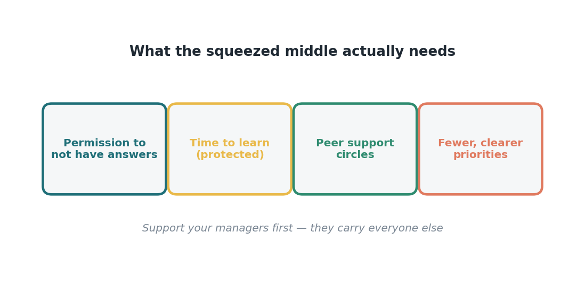

Edisi 14 — Tekanan pada manajer menengah: memimpin tim menembus ketidakpastian
Di balik tingkat adopsi setiap tim, selalu ada manajer menengah yang entah mendorongnya atau diam-diam menghambatnya — biasanya sambil kehabisan tenaga. Datanya jelas: manajer menengah menanggung beban paling berat dalam transformasi dan menjadi kelompok yang paling lelah menghadapi perubahan sekaligus paling cemas soal AI di seluruh organisasi. Mereka juga lapisan penghubung tempat setiap perubahan lewat sebelum sampai ke garis depan, yang bikin kondisi mereka jadi faktor langsung yang menentukan apakah perubahan ini beneran sampai.
Ini menciptakan risiko struktural yang gampang terlewat dalam rencana rollout. Leadership merancang perubahannya; staf garis depan menjalankannya; tapi manajer menengah yang menerjemahkannya, mencontohkannya, dan entah mendukung atau menahannya. Kalau lapisan ini kelelahan, cemas, dan nggak didukung, program sebesar apa pun bakal tersendat di situ. ROI dari seluruh transformasi ini dibatasi oleh kapasitas dan kepercayaan diri lapisan tengah — artinya mendukung manajer bukan sekadar kebaikan hati HR, tapi melindungi laju seluruh investasi ini.
Tekanannya spesifik dan bisa didiagnosis. Manajer menengah menghadapi tekanan dari bawah (tim yang minta jawaban dan ketenangan) dan tekanan dari atas (leadership yang minta hasil), sambil mengelola beban kerja mereka sendiri dan kecemasan mereka sendiri soal AI, dan sering diharapkan tampil percaya diri soal tujuan yang sebenarnya nggak ada yang benar-benar tahu. Kalau dibiarkan, ini muncul sebagai burnout manajer, resistensi pasif, dan adopsi tim yang macet — titik kegagalan paling mahal dalam program ini, justru karena dampaknya menyebar ke seluruh tim.
Kumpulan intervensinya konkret dan murah dibanding dampaknya: beri manajer izin untuk memimpin tanpa harus punya semua jawaban, waktu yang dilindungi untuk membangun kapasitas mereka sendiri, lingkaran dukungan sesama manajer, dan prioritas dari atas yang lebih sedikit dan lebih jelas. Masing-masing langsung meredakan tekanan yang teridentifikasi dalam data. Yang menarik, sikap "belajar bareng kalian" bukan cuma kepemimpinan yang baik — itu juga intervensi burnout, karena menghilangkan beban mustahil berupa kepastian palsu yang jadi sumber banyak kelelahan.
Untuk pengukuran, pantau lapisan tengah secara eksplisit. Lacak kepercayaan diri dan kelelahan manajer sebagai indikator awal, bukan cuma adopsi di garis depan — karena kondisi manajer memprediksi kondisi tim dengan jeda waktu. Dashboard yang menunjukkan metrik garis depan yang sehat tapi mengabaikan lapisan manajemen yang mulai burnout, sebenarnya sedang membaca indikator awal kemunduran di masa depan seolah-olah itu keberhasilan. Ukur tekanannya secara langsung, dan kamu bisa turun tangan sebelum menjalar ke bawah.
Implikasi strategisnya mengubah urutan dukungan: dukung manajer dulu, baru tim mereka. Ini terasa kontraintuitif di tengah tekanan untuk cepat menghasilkan — manajer bisa terasa seperti lapisan yang kita sandari, bukan yang kita lindungi — tapi hitungan dampaknya jelas. Manajer yang didukung akan melipatgandakan dampaknya ke seluruh tim; yang nggak didukung akan jadi titik macet tempat seluruh transformasi tersendat. Memprioritaskan lapisan tengah sejak rupiah pertama adalah pilihan urutan dengan hasil terbaik yang ada.

Ada jebakan urutan yang patut disebutkan secara eksplisit, karena leader dengan niat baik pun sering terjebak di sini. Di tengah tekanan untuk cepat menghasilkan, gerakan alaminya adalah mendorong lapisan tengah lebih keras — lebih banyak update, lebih banyak dashboard, lebih banyak "bisa nggak timmu adopsi lebih cepat." Setiap tambahan itu menumpuk ke beban yang menurut data memang sudah menghimpit lapisan itu, dan hasilnya justru kebalikan dari yang diinginkan: manajer yang makin cemas dan makin lelah malah menularkan lebih banyak kecemasan, bukan lebih banyak adopsi. Gerakan yang kontraintuitif tapi terbukti efektif adalah mengurangi beban lapisan tengah justru di saat kita paling ingin hasil dari mereka — lindungi waktu mereka, pangkas prioritas yang saling bertabrakan, dan beri mereka dukungan sesama — karena manajer yang lebih stabil menghasilkan tim yang lebih cepat beradaptasi. Menekan titik macet nggak akan melebarkannya; meringankannya yang bisa.
Teruskan ini ke senior leadership dengan satu kalimat: manajer kita adalah titik macet adopsi sekaligus kelompok paling lelah yang kita punya — mari kita dukung mereka duluan, dengan sengaja.
Sumber
- Manajer menengah paling lelah menghadapi perubahan dan paling cemas soal AI, menanggung beban paling berat — McKinsey (7 Agustus 2026).